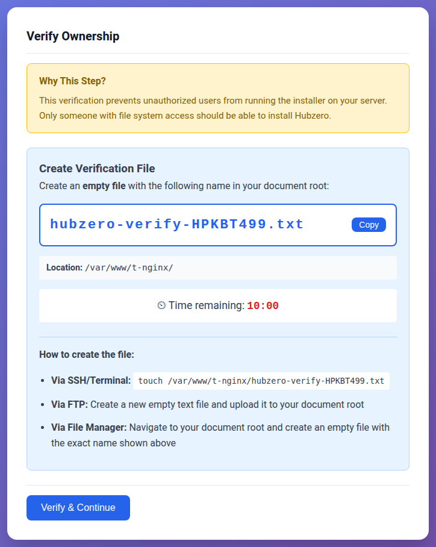
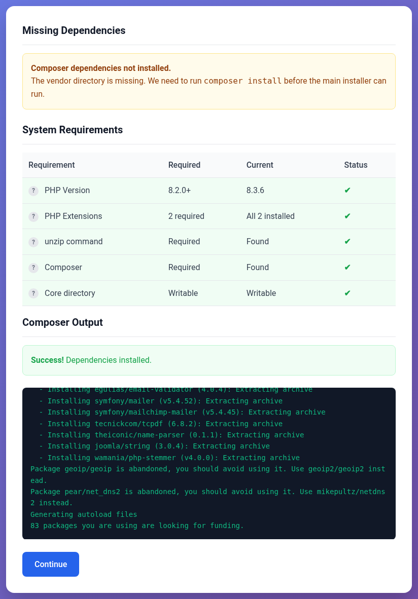
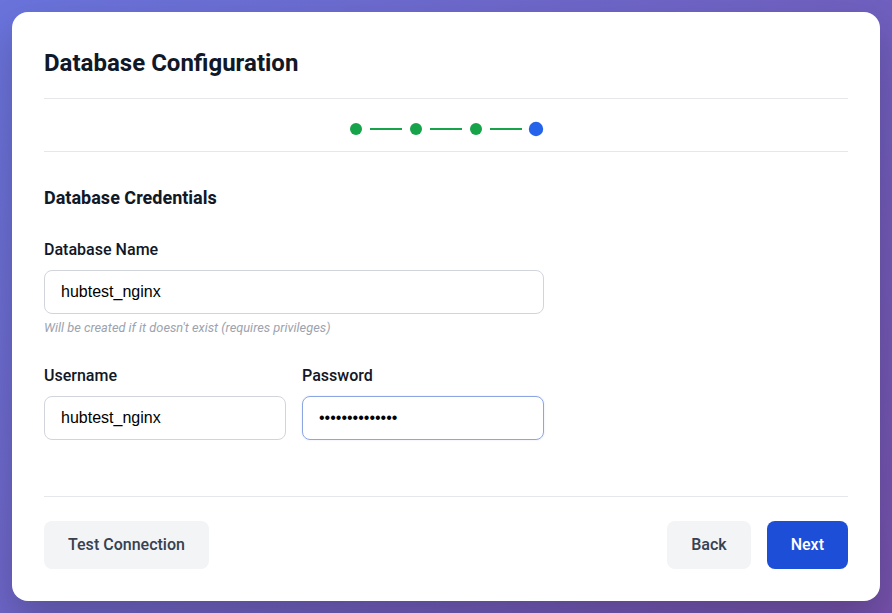
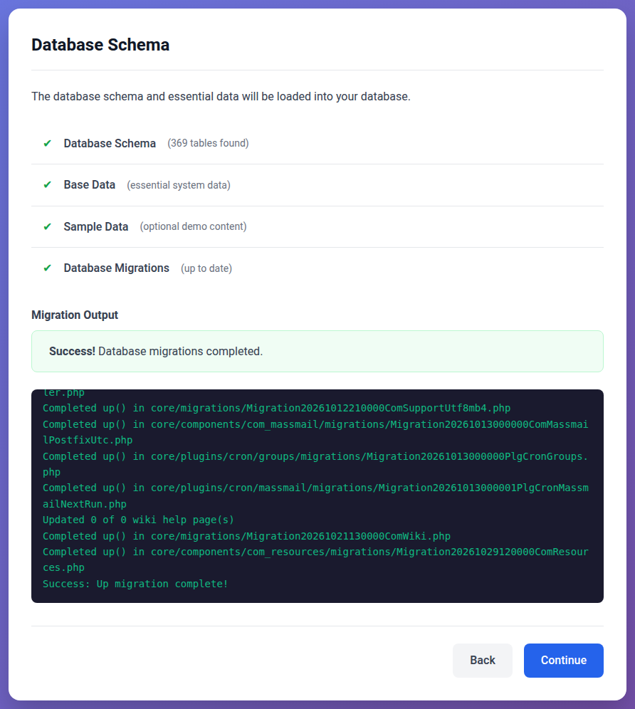
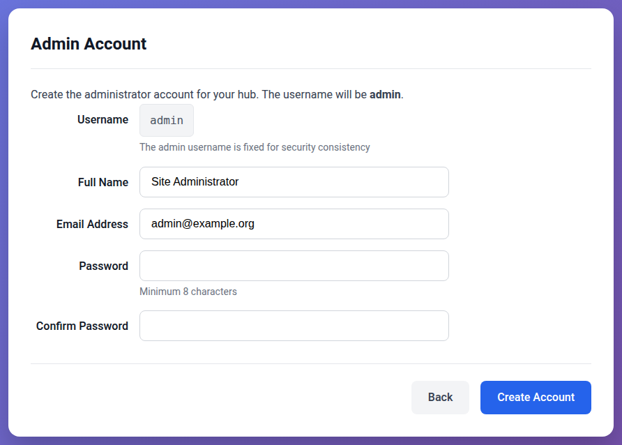

System administrators
Installing the hub
This page installs the hub on a server that one of the system pages has
prepared: MariaDB and PHP 8.2 installed, the code in /var/www/hub, and a
web server answering for the hub's name over HTTPS. If yours is not ready
yet, start at Installing a hub and follow your system's
page first.
Everything here is the same on every system. Where a command differs, it
uses the two values your system's page set at its end: HUB_OWNER, the
account that owns the hub's files, and HUB_PHP, how to run the hub's PHP.
Check they are set in the shell you are using:
echo "$HUB_OWNER" "$HUB_PHP"
It should print something like www-data:www-data sudo -u www-data php. If it
prints nothing, set them again as your system's page shows.
1. Create the database
The hub needs a database and an account that owns it. MariaDB's root
account signs in through the operating system rather than with a password,
so create them with sudo:
sudo mariadb
CREATE DATABASE hub CHARACTER SET utf8mb4 COLLATE utf8mb4_unicode_ci;
CREATE USER 'hub'@'localhost' IDENTIFIED BY 'a-long-random-password';
GRANT ALL PRIVILEGES ON hub.* TO 'hub'@'localhost';
The usage statistics keep a second database of their own, named after the
first with _metrics on the end. A hub runs without it, but its usage pages
stay empty. If you want them, create it now as well:
CREATE DATABASE hub_metrics CHARACTER SET utf8mb4 COLLATE utf8mb4_unicode_ci;
GRANT ALL PRIVILEGES ON hub_metrics.* TO 'hub'@'localhost';
The browser installer can also create the database and account itself, if you give it an administrator account that has a password and the right to grant privileges. Creating them by hand, as above, needs neither.
2. Check the server
The installer can check everything it needs before it changes anything:
cd /var/www/hub
$HUB_PHP core/bin/muse install check
It lists the PHP version, each extension, unzip, and whether it can write
to the hub's directory, and ends by saying whether all of them passed. If the
libraries are not installed yet it says so; the installer installs them.
3. Install
Two installers do the same job: one on the command line, one in the browser.
Both load the database, write the configuration into app/config/, bring
the database up to date and create the administrator. Use one of the three
ways below.
From the command line
cd /var/www/hub
$HUB_PHP core/bin/muse install
It asks its questions one at a time and checks each answer before moving on. In order:
- Composer. If the libraries are not installed yet, it installs them first, which takes a minute or two. A warning that Composer "Cannot create cache directory" is harmless: the account has no home of its own to keep a cache in, so Composer downloads without one.
- Requirements. The same checks as above. It stops if any of them fail.
- Site settings. The hub's name, the administrator's email address, the
address it is served at (
https://hub.example.org), the time zone, and a description for search engines. - Database. It looks for an account it can use without asking, then
offers to use an existing account or to create one with an
administrator's credentials. Choose the existing account, give the host as
127.0.0.1, and the database, user and password you created. - Schema. It creates about 380 tables and loads the data every hub needs, then offers sample data: a front page, menus and articles to look at. Answer no for a hub you are going to fill yourself.
- Migrations. It brings the database up to date, which takes a minute or so. Four warnings are expected; see Warnings during the migrations.
- Administrator. A name, a username, an email address and a password of at least eight characters.
It ends by printing the site's address and the administrator's username.
Or from the command line, with an answer file
muse install can take every answer from a file instead of asking for them,
which is how to install a hub from a script, or the same hub more than once.
Write the file as /var/www/hub-install.json, outside the hub's directory:
{
"site": {
"sitename": "My Hub",
"mailfrom": "admin@hub.example.org",
"live_site": "https://hub.example.org",
"offset": "America/New_York"
},
"database": {
"host": "127.0.0.1",
"database": "hub",
"username": "hub",
"password": "a-long-random-password"
},
"admin": {
"name": "Ada Administrator",
"username": "admin",
"email": "admin@hub.example.org",
"password": "another-long-password"
},
"sample": false
}
| Section | Keys |
|---|---|
site |
sitename, mailfrom (the administrator's address), live_site (the hub's address; leave it out to have the hub work it out from each request), offset (a time zone such as UTC or Europe/London), and optionally MetaDesc, the description for search engines |
database |
host, database, username, password, and optionally port, socket and prefix (the table prefix, jos_ unless you say otherwise) |
admin |
name, username, email, password (at least eight characters) |
sample |
true to load the sample data, false not to |
It holds two passwords, so give it to the hub's account alone, use it, and delete it:
sudo chown "$HUB_OWNER" /var/www/hub-install.json
sudo chmod 600 /var/www/hub-install.json
cd /var/www/hub
$HUB_PHP core/bin/muse install --config=/var/www/hub-install.json
sudo rm /var/www/hub-install.json
If the hub runs in Docker, the container cannot see that file. Copy it in instead, use the copy, and remove both:
sudo docker cp /var/www/hub-install.json hub:/tmp/hub-install.json
sudo docker exec -u root hub chown 33:33 /tmp/hub-install.json
sudo docker exec -u root hub chmod 600 /tmp/hub-install.json
$HUB_PHP core/bin/muse install --config=/tmp/hub-install.json
sudo docker exec -u root hub rm /tmp/hub-install.json
sudo rm /var/www/hub-install.json
It runs every step the questions would, Composer included, and stops at the
first answer it cannot use, saying which. It never creates the database or its
account: create those first. Any single step takes the file too, so one can
be repeated on its own, for example muse install admin --config=....
Or from the browser
Open https://hub.example.org/. A hub that is not installed yet answers every
address with its installer.
The first thing it asks is that you prove you can change files on the server, so that nobody who merely finds the address can install a hub on it. It shows the name of a file to create in the hub's directory:

Create it within ten minutes, then select Verify & Continue:
sudo touch /var/www/hub/hubzero-verify-XXXXXXXX.txt
The installer removes the file once it has seen it.
If the libraries are not installed yet, the next page is Hubzero Bootstrap Setup. It checks what Composer needs and has a Run Composer button, which installs the libraries and shows Composer's output as it goes. When it reports Success!, select Continue.

The installation wizard follows. It moves through Verify, Welcome, Requirements, Database, Settings, Schema, Admin and Complete, and goes straight to the first step that still needs doing, so after the bootstrap page it usually opens at Database.
Database. Choose Standard (localhost), which connects to 127.0.0.1
over TCP. Then choose I have credentials ready and give it the database
name, user and password you created. Test Connection checks them without
moving on.

Settings. The hub's name, the administrator's email address, the time zone, and a description for search engines. Leave Site URL blank to have the hub work out its address from each request, or give it, which the scheduled tasks need later.
Schema. Tick Load sample data if you want a front page, menus and articles to look at, then select Load Database. It creates the tables, loads the data and runs the migrations, showing their output as they go. This takes a minute or two; leave the page open until it says Success!, then select Continue.

Admin. The administrator's username is always admin. Give a name, an
email address and a password of at least eight characters, then select
Create Account. Complete follows, with the address of the
administrator interface.

Once the hub is installed, the installer refuses to change anything.
/install still answers, behind the same ownership check, but every step is
read-only.
4. After installing
The welcome page. Until you say otherwise, every page of the new hub shows a welcome page that points at this documentation. Select Jump to Your Hub on it to switch the hub to its real template. With sample data, that takes you to a Getting Started article; without it, to the hub's front page.
Sign in. The administrator interface is at
https://hub.example.org/administrator. The same account signs in to the
site at /login.
Scheduled tasks. Nothing that runs on a schedule happens until the server
ticks the hub every minute. Add the line your system's page gave you to
/etc/crontab. It needs the hub's address in live_site in
app/config/app.php, which the browser installer leaves blank unless you
filled in Site URL. What the tick does, and the jobs it runs, are in
Scheduled tasks.
Mail. The hub sends mail with PHP's mail() until you configure
something else. See
Mail Settings.
Time zones in the database. MariaDB starts without its time zone tables.
The migrations load them only when they are run by the system's root,
which the installers are not. Load them once yourself:
mariadb-tzinfo-to-sql /usr/share/zoneinfo | sudo mariadb mysql
Usage statistics. If you created the _metrics database after
installing, run the migrations again to set it up. Only the ones that did
not finish run again:
cd /var/www/hub
$HUB_PHP core/bin/muse migration run -f
Keeping it up to date. Upgrading a hub brings the hub up to the latest code on its branch, with a backup first and a way back.
Then go on to The first week with a new hub.
Warnings during the migrations
Both installers, and the upgrade, show the same four warnings on a new hub. None of them stops the hub working:
| Warning | Why |
|---|---|
| onBeforeMigrate hook 'UpdateTimezoneDatabase.php' ... Insufficient privileges to update timezone tables | Loading MariaDB's time zone tables needs its root account. Load them yourself, as described above |
| Migration20150330124145Core.php: Unable to write out new configuration file | It updates a configuration file from an older version of the hub, which a new hub does not have |
| Migration20150904235936ComUsage.php: Failed to run with the necessary privileges | The _metrics database does not exist, and creating one needs root. Create it as described above and run the migrations again |
| Migration20170627153900ComHubgraph.php: Failed to run with the necessary privileges | It removes database triggers that older hubs had. A new hub has none to remove |
A migration that ended in a warning is tried again the next time the migrations run; one that succeeded is not.
When something goes wrong
The administrator sign-in page does nothing, or the browser shows a
connection error after signing in. The hub is being served over plain HTTP.
The administrator sign-in form posts to https://; serve the hub over HTTPS.
A page says the file or directory is not writable, or images and uploads
fail. Something in /var/www/hub belongs to another account, usually
because a command was run as yourself or as root. Give it back:
sudo chown -R "$HUB_OWNER" /var/www/hub
The browser installer's migrations stop with Connection error. The migrations may still have finished. Reload the page; if it still lists migrations as pending, finish them from the command line:
cd /var/www/hub
$HUB_PHP core/bin/muse migration run -f
Requests for /app/config/database.php do not answer 403. The web
server's rules for private paths are missing. Check before the hub is in use:
curl -s -o /dev/null -w "%{http_code}\n" https://hub.example.org/app/config/database.php
Anything particular to your system, such as SELinux on Enterprise Linux or the container under Docker, is at the end of your system's page.
Rewritten and checked against 2.4-main @ 981ae7fc4a on 2026-10-30.